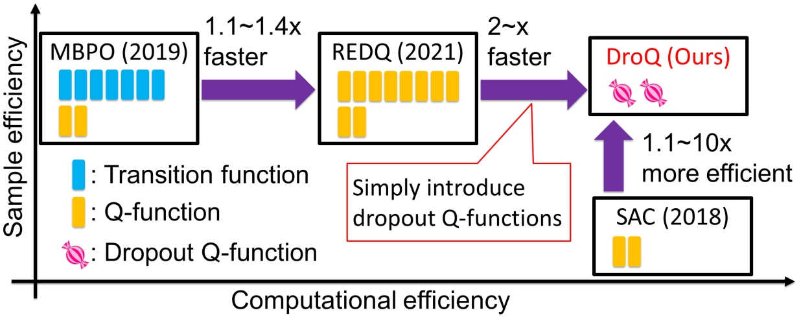
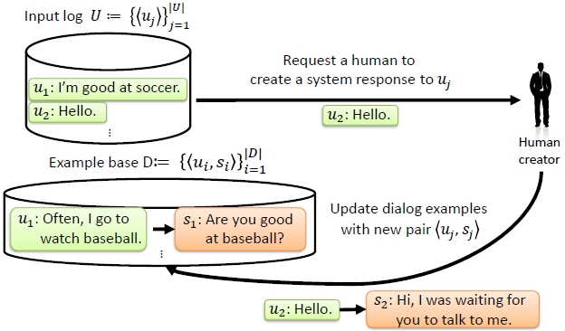
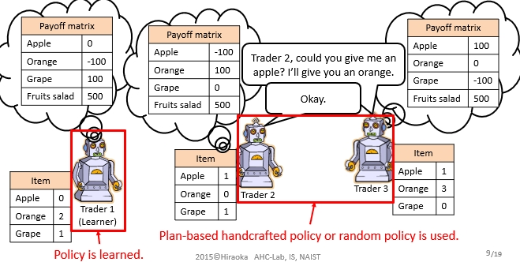

Reinforcement Learning
Efficient method for estimating the influence of experiences on RL agent's performance (2023 ~ 2025, NEC and AIST)
-
Takuya Hiraoka, Guanquan Wang, Takashi Onishi, Yoshimasa Tsuruoka.
Which Experiences Are Influential for RL Agents? Efficiently Estimating The Influence of Experiences
Reinforcement Learning Conference (RLC) / Journal (RLJ), 2025
poster,
slides,
source code,
demo video 1,
demo video 2,
arXiv,
RLJ version
Simple but Efficient Reinforcement Learning Method for Sparse-Reward Goal-Conditioned tasks (2023, NEC and AIST)
Very Simple but Doubly Efficient Reinforcement Learning Method (2021, NEC and AIST)

Model Based Meta Reinforcement Learning (2020, NEC, AIST and RIKEN)
-
Takuya Hiraoka, Takahisa Imagawa, Voot Tangkaratt, Takayuki Osa, Takashi Onishi, Yoshimasa Tsuruoka.
Meta-Model-Based Meta-Policy Optimization
The 13th Asian Conference on Machine Learning (ACML), November, 2021
poster,
video presentation,
demo video,
arXiv version,
source code
Robust Hierarchical Reinforcement Learning (2019, NEC and AIST)
Dialogue Systems
Inquiry Dialogue System (2018, NEC)
Persuasive Dialogue System (~2016, NAIST)
Example-based Dialogue System (2016, NAIST)

Negotiation Dialogue System (2015, NAIST and USC)
